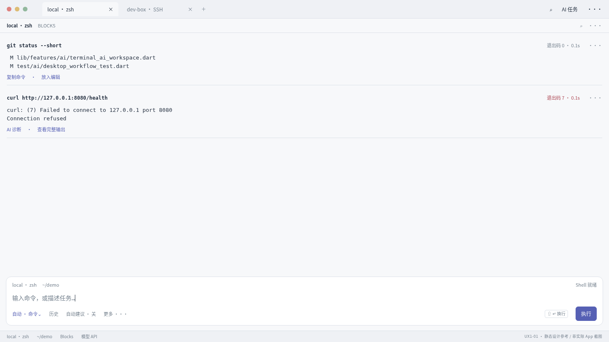
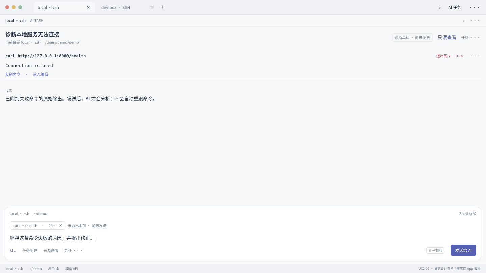
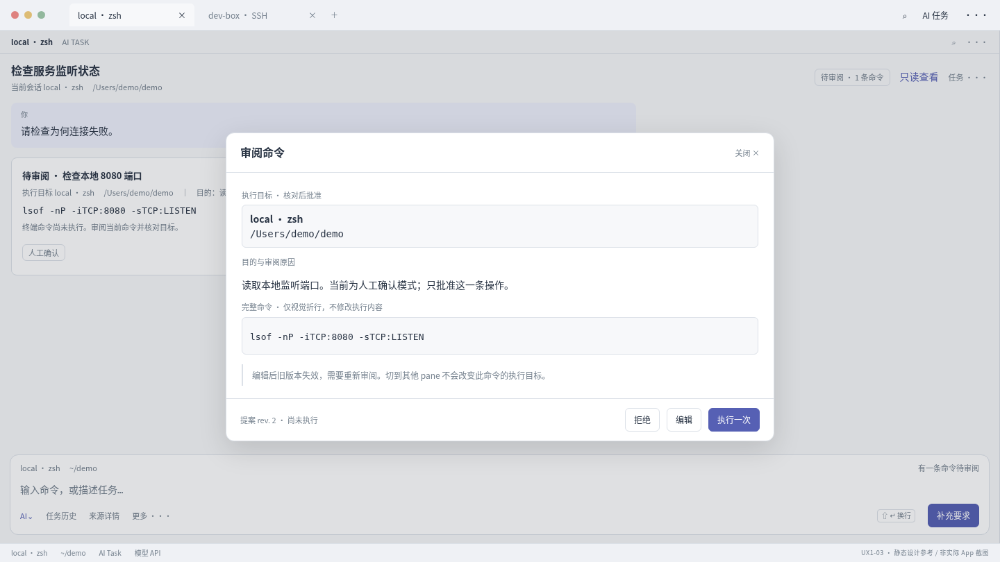
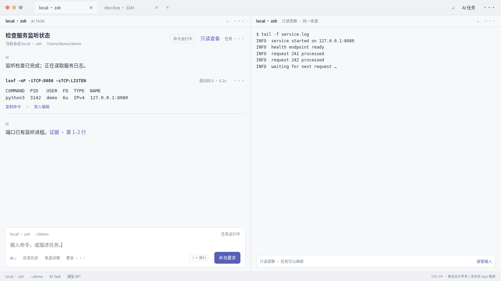

← 全部设计D1 · 桌面 Block × AI 工作流
以下为静态桌面示例，1440×810（16:9）。不是实际Flutter截图，也不是验收证据。
UX1-01 · D1-R01/R02
失败 Block 的桌面快捷诊断
保留单层顶栏、底部状态栏与三层Dock；失败Block直接显示AI诊断。点击只准备草稿。
查看独立HTML
UX1-02 · D1-R03/R04/R05
从 Block 准备诊断任务
来源与草稿可编辑；准备阶段没有推理或执行。当前会话与任务目标没有变化。
查看独立HTML
UX1-03 · D1-R06/R07/R08
完整命令审阅层
完整目标和命令、固定操作；摘要不直接批准；编辑/切pane需校验原revision。
查看独立HTML
UX1-04 · D1-R05/R09/R10
任务结果与只读观察
右区是显式打开的只读观察，不是第二PTY；复制可用，键鼠报告不写入。
查看独立HTML